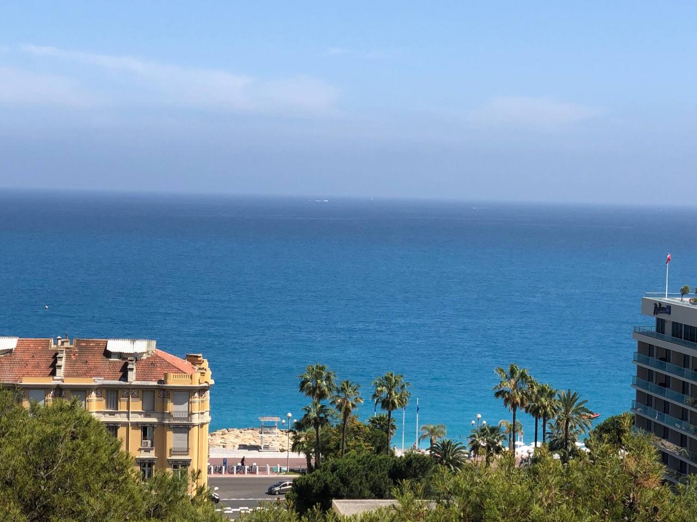

Bienvenue
Votre guide pour un séjour parfait à Nice
🔑 Accéder au guide de l'appartement
Entrez le mot de passe fourni par votre hôte
✅
Entrez le mot de passe sur la page d'accueil pour débloquer
Votre studio à Nice

Votre guide pour un séjour parfait à Nice
Entrez le mot de passe fourni par votre hôte
✅
Entrez le mot de passe sur la page d'accueil pour débloquer